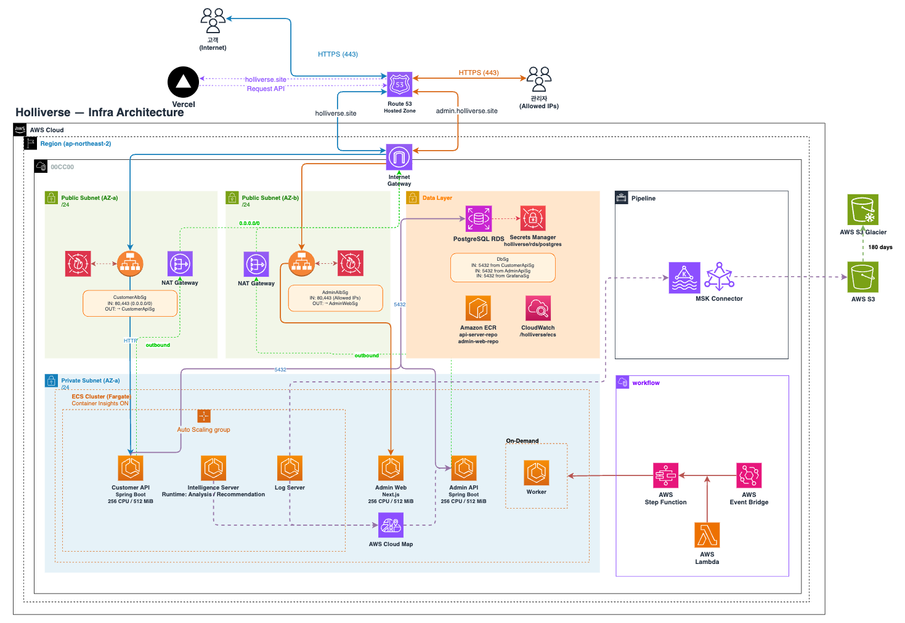
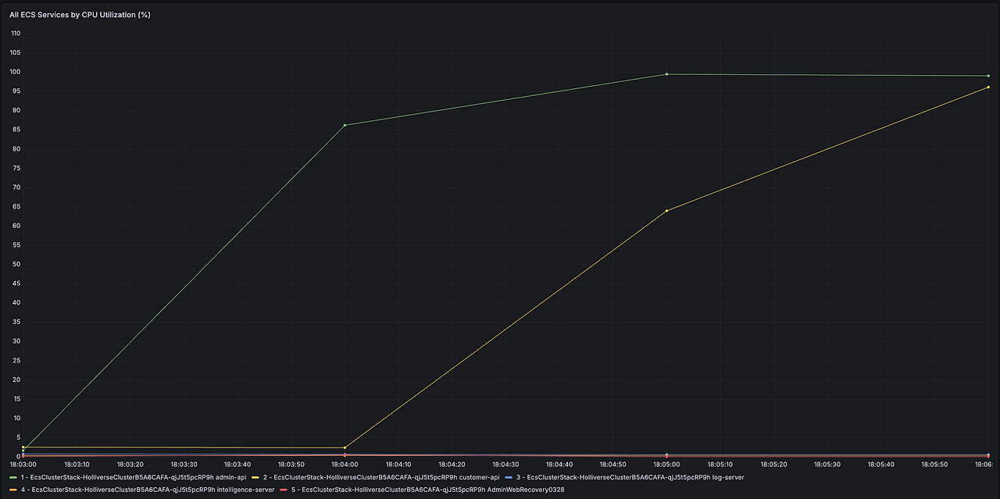
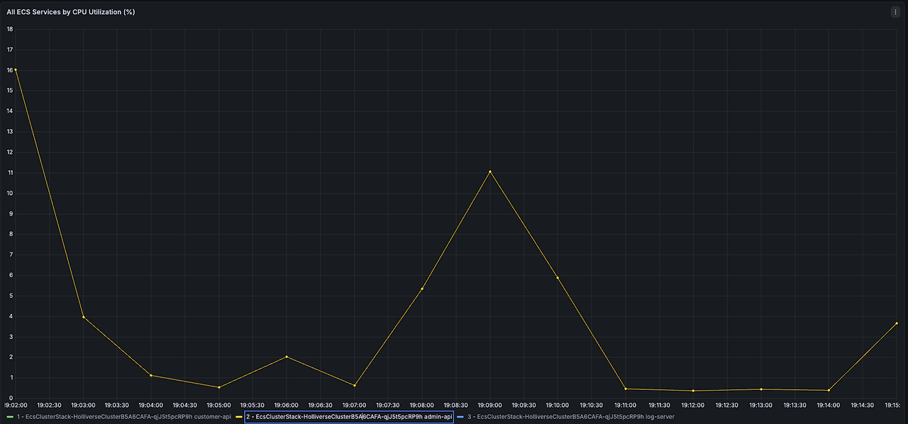
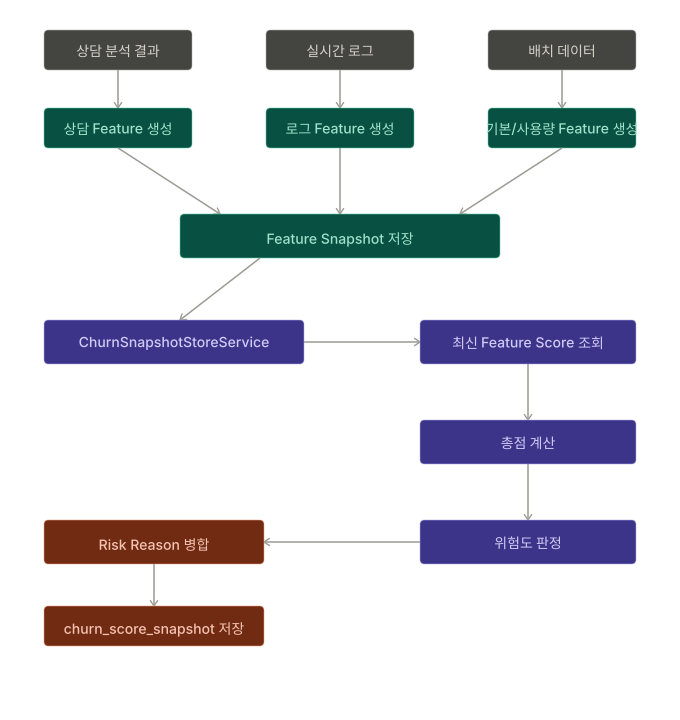
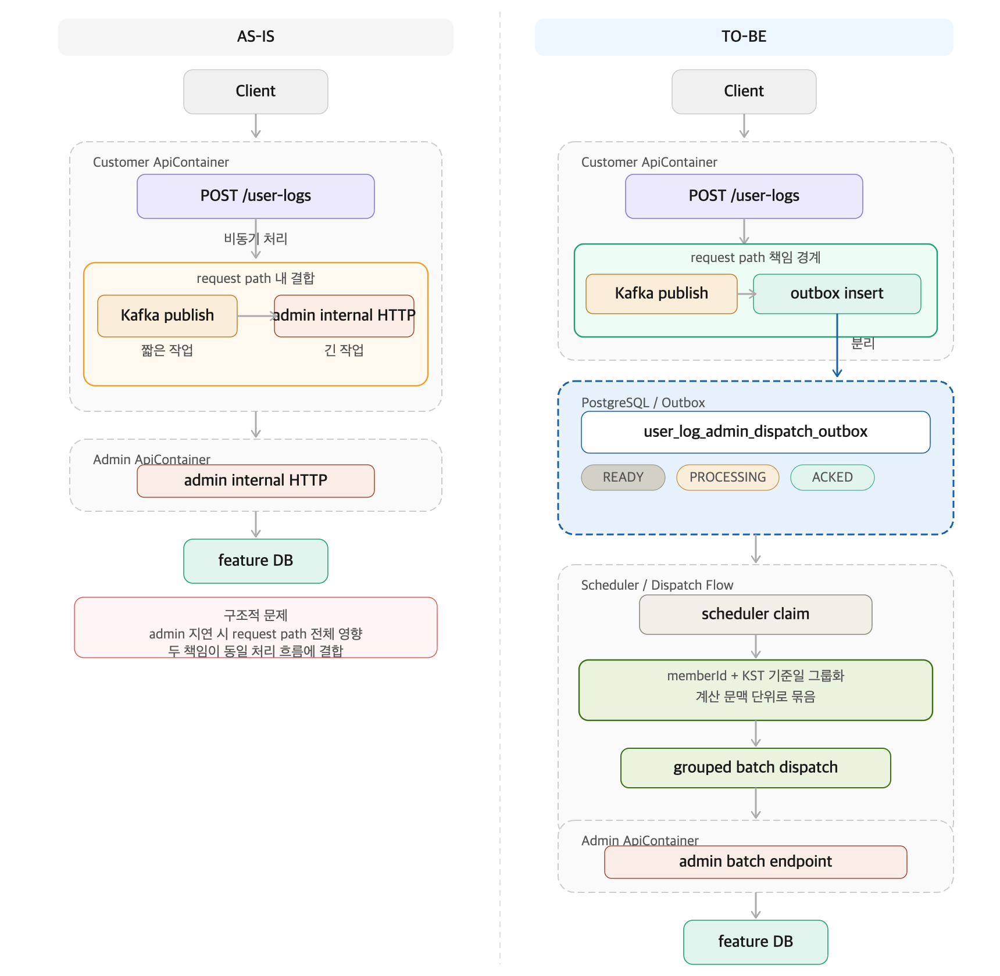
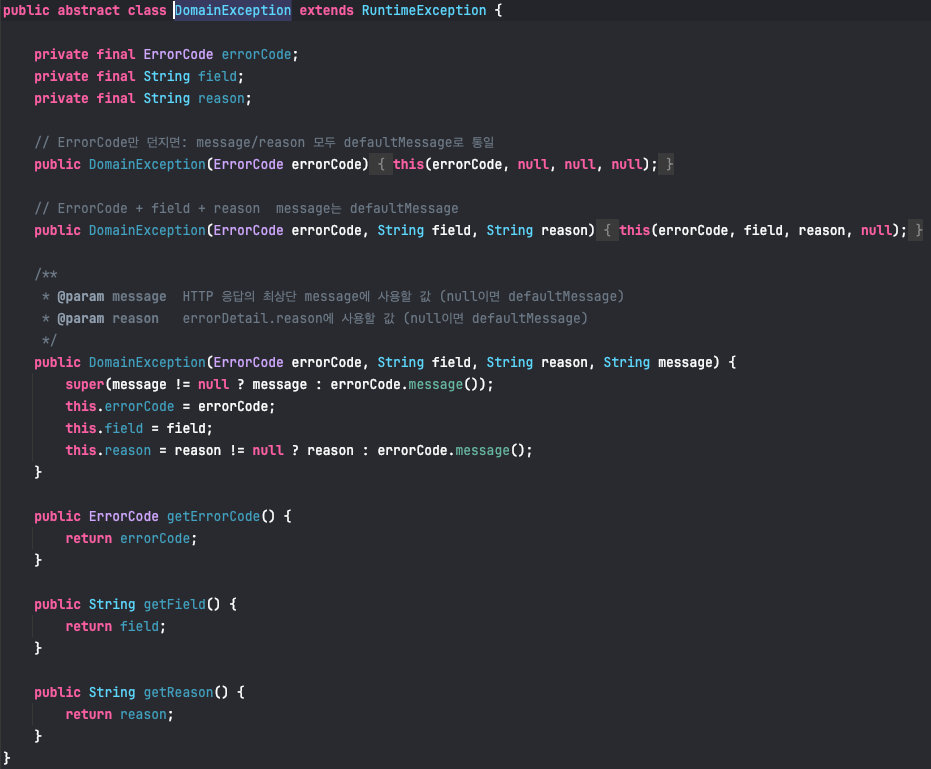

HOW I
BUILT IT

초기에는 AWS Console로 직접 인프라를 구성했지만, 프로젝트 종료 후 리소스를 정리하고 나면 동일한 환경을 다시 복원하기가 어려웠습니다. 설정이 코드로 남지 않아 재현성과 유지보수에 한계가 있었습니다.
- 콘솔 기반의 인프라는 구성 순서와 설정 이유가 명확하지 않음
- 새로운 IaC 도구를 도입하더라도 직접 이해하고 검증 가능한 방식이 필요했음
- 인프라를 수작업이 아닌 IaC 방식으로 관리하도록 전환 ↗ 내용 자세하게 보기
- Terraform 대신, 팀의 주력 언어와 동일한 Java 기반 AWS CDK 선택
- 익숙한 객체지향 구조로 VPC, ALB, ECS, RDS등 리소스 코드화 ↗ #15 ↗ #18 ↗ #20
- 인프라를 일회성 수작업이 아닌 재현 가능한 15개의 Stack 코드 자산으로 전환
- 배포 변경 영향 범위를 73.3% 축소할 수 있는 구조 마련
- 동일한 환경에서 다시 배포하고 유지할 수 있는 기반 확보
- 인프라 코드도 애플리케이션 코드처럼 테스트 코드를 짤 수 있는 구조 마련

Holliverse는 여러 서비스로 구성되어 있어, 빠르게 MVP를 만들고 E2E 테스트를 반복하려면 지속적으로 배포할 수 있는 구조가 먼저 필요했습니다. 그래서 서비스별로 흩어진 배포 대신, 중앙 Infra Repository에서 정책과 실행을 함께 관리하는 구조를 선택했습니다.
- 서비스별로 CI/CD를 따로 두면 커밋 규칙, PR 템플릿, 릴리즈 방식이 저장소마다 달라질 수 있었음
- stack deploy 중심 배포는 변경 범위가 넓고, 배포마다 부트스트랩 비용이 반복됐음
- 빠른 배포를 유지하면서도 공통 품질 게이트를 함께 가져가야 했음
- 모니터링 변경 배포 시간 평균 449.1초 → 82.7초, 81.6% 단축
- 서비스 배포 시간 중앙값 449.1초 → 220.4초, 50.9% 단축
- 서비스 배포 처리량 8.0회/시간 → 16.3회/시간, 103.7% 증가


K6 부하 테스트에서 관리자 API가 30초를 버티지 못했고, Grafana 기준 단일 ECS task의 자원 포화와 Auto Scaling 부재가 확인됐습니다.
- CPU 최대 99.4%, Memory 최대 99.4%
- Running Task Count 1, Desired Task Count 1
- 테스트를 끝까지 수행할 수 있는 기본 수용량 확보 필요
- admin-api 기준 CPU 256 → 512, Memory 512MiB → 1024MiB로 상향
- desiredCount 1 → 2, min 2 / max 4로 기본 분산 가능 구조 확보
- ECS Auto Scaling 적용: CPU 65%, Memory 75%, scale-out 60초, scale-in 180초 기준으로 설정
- Desired Task Count가 2 → 3 → 4, Running Task Count가 2 → 4로 실제 scale-out 동작 확인
- CPU 사용률 최대 99.4% → 16% 수준, Memory 사용률 98~99.4% → 43.8~46.2%로 완화
- 2차 테스트부터는 서버가 즉시 무너지지 않고, 어떤 API가 tail latency를 만드는지 추적 가능한 상태로 전환

이탈률은 단순 점수 계산이 아니라, 상담·사용자 로그·기본 정보처럼 생성 시점과 반영 속도가 다른 신호를 함께 다뤄야 했습니다. 그래서 각 데이터를 같은 방식으로 처리하지 않고, Feature 생명주기와 적재 방식을 먼저 분리하는 설계가 필요했습니다.
- 상담, 로그, 기본 정보는 실시간성과 적재 주체가 서로 달랐음
- Admin Server가 모든 입력 흐름을 직접 해석하면 책임이 과도하게 커질 수 있었음
- 새로운 Feature 추가나 가중치 변경이 생겨도 전체 계산 흐름이 무너지지 않는 구조가 필요했음
- Feature를 Real-Time / Event / Default 3가지 생명주기로 분리 ↗ 내용 자세히 보기 ↗ PR #210
- 상담 데이터는 CDC 기반, 사용자 행동 로그는 Customer Server 선별 후 HTTP 전달, 기본 정보는 주기적 배치로 반영 ↗ PR #215 ↗ PR #247 ↗ PR #201
- 각 입력 채널은 Feature만 계산하고, 공통 오케스트레이션 계층이 최신 Feature Score를 다시 읽어 최종 이탈률과 위험 사유를 저장하도록 설계 ↗ PR #230 ↗ PR #232
- 점수 규칙은 application-churn.yml + scorer 계층으로 분리해 가중치 변경 가능성을 구조적으로 수용 ↗ PR #210

이탈률 기능은 단순히 API가 성공 응답을 주는 것보다, customer가 받은 이벤트가 최종 feature DB까지 정확히 반영되는가 가 더 중요했습니다. 실제 Burst Test에서는 HTTP는 모두 accepted 되었지만, 최종 DB 반영 수는 기대치보다 크게 부족했습니다. 즉 이 문제는 단순 성능 문제가 아니라 정합성 문제였고, request 수락부터 outbox, dispatch, 최종 DB 반영까지 전체 경로를 다시 설계하고 추적해야 했습니다.
- 초기 Burst Test에서 9,073건 중 6,635건만 반영되어 유실률 26.87%, p95 9,789.065ms를 기록
- executor 분리 이후에도 10,808건 중 9,377건 반영으로 유실률이 13.24%까지밖에 줄지 않았음
- request accepted와 최종 DB 반영 사이에 큰 차이가 있었기 때문에, 단순 응답 성공률이 아니라 intendedUniqueEvents / outbox / feature DB를 함께 추적해야 했음
- 구조 문제인지, batch 전략 문제인지, 운영 설정 문제인지 단계별로 분리해 증명할 수 있어야 했음
- customer request path와 admin 반영 path를 분리하기 위해 Outbox 패턴 도입 ↗ PR #280
- 내부 scheduler가 `READY / PROCESSING / RETRY / ACKED / DEAD` 상태를 관리하도록 설계해, 이벤트 전달을 추적 가능한 파이프라인으로 전환 ↗ PR #280
- admin에 batch endpoint를 추가하고, customer에서 실제로 여러 이벤트를 묶어 보내는 다건 전송 구조로 변경 ↗ PR #284
- 최종적으로 `memberId + KST 기준일` 단위로 그룹핑해 feature 계산 문맥과 전송 단위를 맞춤 ↗ PR #284
- batch 적재 경량화와 retry 부담 완화로 dispatch 경로의 write 부하를 낮춤 ↗ PR #281
- `candidate`, `stored`, `acked`, 최종 DB count를 비교하는 계측을 추가해 유실 지점을 단계별로 분해
- 초기 Burst Test 기준 유실률 26.87% → executor 분리 후 13.24%로 감소해 50.72% 절감 ↗ PR #277 ↗ PR #278
- Outbox + batch endpoint + 실제 다건 전송 적용 후 13,597건 중 13,202건 반영, 유실률 2.91%까지 낮춰 초기 대비 89.17% 절감 ↗ PR #280 ↗ PR #281 ↗ PR #284
- 최종적으로 동일 burst 시나리오 재검증에서 intendedUniqueEvents = 21,526, outbox ACKED = 21,526, feature DB total = 21,526으로 세 값이 완전히 일치했고, 최종 유실률 0%를 확인

서비스 전반에 GlobalExceptionHandler와 공통 에러 응답 포맷은 있었지만, 실제로는 인증 실패, 입력 검증 실패, 비즈니스 예외, DB 제약조건 충돌이 서로 다른 기준으로 처리되고 있었습니다. 그 결과 충분히 제어 가능한 요청도 500으로 내려가고, API 실패 응답의 일관성이 흔들리는 문제가 있었습니다.
- 인증이 필요한 엔드포인트 12개 중 Security 계층에서 실제 보호되는 엔드포인트가 0개였음
- @RequestBody 기반 요청의 검증 적용률이 낮았고, 일부 DTO는 제약조건이 전혀 없었음
- unique constraint 11개 중 의미 있게 매핑된 것은 2개뿐이었고, 예외 타입도 CustomException, IllegalArgumentException, ResponseStatusException 등으로 혼재돼 있었음
- 공용 ErrorCode enum 대신 도메인별 ErrorCode와 DomainException 계층을 도입해 실패 의미를 도메인에서 직접 정의 ↗ 내용 자세히 보기
- 인증 실패는 컨트롤러가 아니라 Spring Security의 AuthenticationEntryPoint, AccessDeniedHandler가 공통 응답으로 처리하도록 재구성
- 모든 @RequestBody 요청에 @Valid와 DTO 제약조건을 적용해 입력 검증을 컨트롤러 경계로 끌어올림
- DB 충돌은 ConstraintExceptionMapper로 분리해 constraint 이름을 도메인 에러코드와 field로 매핑하도록 정리
- 인증 보호 엔드포인트 0/12 → 12/12, 비인증 요청의 500 오분류 위험 6개 → 0개
- @RequestBody + @Valid 적용률 6/10 → 10/10, 핵심 검증 누락 DTO 4개 → 0개
- CustomException 사용 수 43 → 0, DomainException 계열 44건 도입
- DB constraint 매핑도 하드코딩 분기에서 구조화된 매퍼 기반으로 전환